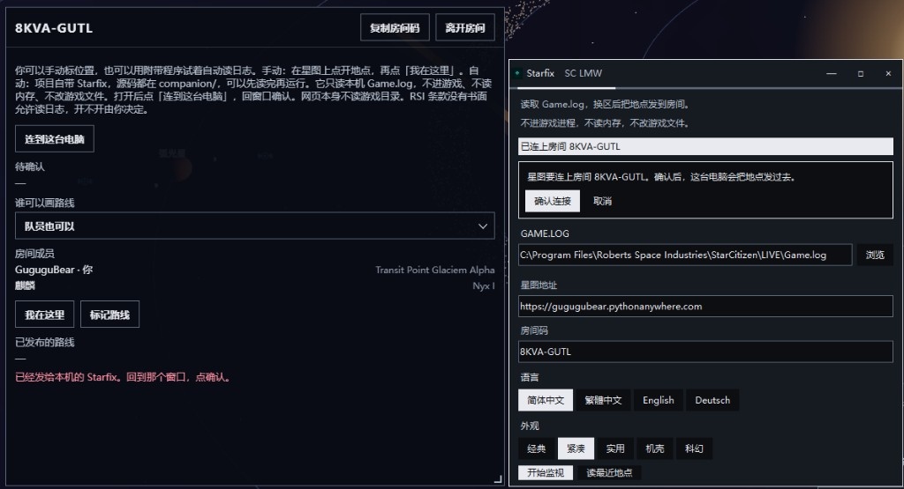

SC LMW 1.0 · Unofficial fan project. Not endorsed by, sponsored by, or affiliated with Cloud
Imperium Games or Roberts Space Industries. Star Citizen® is a trademark of Cloud Imperium
Rights LLC. · Credits & licenses
·
Starfix
Starfix is an optional program on your own computer. The star map does not read the game folder. Without Starfix, open a place on the map and choose “I am here”.
When you need it
After a zone change, the room you confirmed receives the place code on its own.
You want to play your own log back on the map. That record stays on this computer.
What it does
It reads the Game.log you point it at and sends the place code and system to the room you confirmed.
It keeps a personal record on this computer. The map log reads that record from this computer.
The window asks first. It saves the room code and token only after you confirm.
Questions people ask
Does it enter the game, read memory, or change game files?
No. It opens only the one log file you point it at.
Does it upload the whole log?
No. The room receives the place code and the system.
Does the website read my game folder?
No. The game folder is opened only by Starfix on this computer.
Can another website take the room token?
Connect this computer sends the room code and token only to 127.0.0.1:8780 on this machine.
Has RSI allowed reading the log?
There is no written permission. Every launch shows the terms first. You decide whether to run it.
How to use it
From the project folder: python companion/app.py. Or download the published Starfix 1.0.3.
In the map room, choose “Connect this computer”, then confirm in the Starfix window.
Choose “Start watch”. After a zone change, the room receives the place code.
What it looks like

The map room is on the left. The Starfix window is on the right.